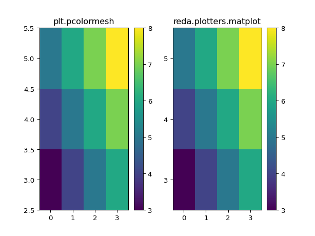

reda.plotters package¶
Various tools for data visualization
Submodules¶
reda.plotters.histograms module¶
Histogram functions for raw data.
-
reda.plotters.histograms.plot_histograms(ertobj, keys, \*\*kwargs)[source]¶ Generate histograms for one or more keys in the given container.
- Parameters
- ertobjcontainer instance or
pandas.DataFrame data object which contains the data.
- keysstr or list of strings
which keys (column names) to plot
- mergebool, optional
if True, then generate only one figure with all key-plots as columns (default True)
- log10plotbool, optional
default: True
- extra_dimslist, optional
?
- nr_binsNone|int
if an int is given, use this as the number of bins, otherwise use a heuristic.
- ertobjcontainer instance or
- Returns
- figuresdict
dictionary with the generated histogram figures
Examples
>>> from reda.plotters import plot_histograms >>> from reda.testing import ERTContainer >>> figs_dict = plot_histograms(ERTContainer, "r", merge=False) Generating histogram plot for key: r
-
reda.plotters.histograms.plot_histograms_extra_dims(dataobj, keys, primary_dim=None, \*\*kwargs)[source]¶ Produce histograms grouped by one extra dimensions. Produce additional figures for all extra dimensions.
The dimension to spread out along subplots is called the primary extra dimension.
Extra dimensions are:
timesteps
frequency
If only “timesteps” are present, timesteps will be plotted as subplots.
If only “frequencies” are present, frequencies will be plotted as subplots.
If more than one extra dimensions is present, multiple figures will be generated.
Test cases:
not extra dims present (primary_dim=None, timestep, frequency)
timestep (primary_dim=None, timestep, frequency)
frequency (primary_dim=None, timestep, frequency)
timestep + frequency (primary_dim=None, timestep, frequency)
check nr of returned figures.
- Parameters
- dataobj
pandas.DataFrameor reda container The data container/data frame which holds the data
- keysstring|list|tuple|iterable
The keys (columns) of the dataobj to plot
- primary_dimstring
primary extra dimension to plot along subplots. If None, the first extra dimension found in the data set is used, in the following order: timestep, frequency.
- subquerystr, optional
if provided, apply this query statement to the data before plotting
- log10bool
Plot only log10 transformation of data (default: False)
- lin_and_log10bool
Plot both linear and log10 representation of data (default: False)
- Nxint, optional
Number of subplots in x direction
- dataobj
- Returns
- dim_namestr
name of secondary dimensions, i.e. the dimensions for which separate figures were created
- figuresdict
dict containing the generated figures. The keys of the dict correspond to the secondary dimension grouping keys
Examples
>>> import reda.testing.containers >>> ert = reda.testing.containers.ERTContainer_nr >>> import reda.plotters.histograms as RH >>> dim_name, fig = RH.plot_histograms_extra_dims(ert, ['r', ])
>>> import reda.testing.containers >>> ert = reda.testing.containers.ERTContainer_nr >>> import reda.plotters.histograms as RH >>> dim_name, fig = RH.plot_histograms_extra_dims(ert, ['r', 'a'])
reda.plotters.plots2d module¶
2D plots of raw data. This includes pseudosections.
-
reda.plotters.plots2d.matplot(x, y, z, ax=None, colorbar=True, \*\*kwargs)[source]¶ Plot x, y, z as expected with correct axis labels.
Examples
>>> import matplotlib.pyplot as plt >>> import numpy as np >>> from reda.plotters import matplot >>> a = np.arange(4) >>> b = np.arange(3) + 3 >>> def sum(a, b): ... return a + b >>> x, y = np.meshgrid(a, b) >>> c = sum(x, y) >>> fig, (ax1, ax2) = plt.subplots(1, 2) >>> im = ax1.pcolormesh(x, y, c) >>> _ = plt.colorbar(im, ax=ax1) >>> _ = ax1.set_title("plt.pcolormesh") >>> _, _ = matplot(x, y, c, ax=ax2) >>> _ = ax2.set_title("reda.plotters.matplot") >>> fig.show()
(Source code, png, pdf)

{kind=link}
-
reda.plotters.plots2d.plot_pseudodepths(configs, nr_electrodes, spacing=1, grid=None, ctypes=None, dd_merge=False, \*\*kwargs)[source]¶ Plot pseudodepths for the measurements. If grid is given, then the actual electrode positions are used, and the parameter ‘spacing’ is ignored’
- Parameters
- configs: :class:`numpy.ndarray`
Nx4 array containing the quadrupoles for different measurements
- nr_electrodes: int
The overall number of electrodes of the dataset. This is used to plot the surface electrodes
- spacing: float, optional
assumed distance between electrodes. Default=1
- grid: crtomo.grid.crt_grid instance, optional
grid instance. Used to infer real electrode positions
- ctypes: list of strings, optional
a list of configuration types that will be plotted. All configurations that can not be sorted into these types will not be plotted! Possible types:
dd
schlumberger
- dd_merge: bool, optional
if True, merge all skips. Otherwise, generate individual plots for each skip
- Returns
- figs: matplotlib.figure.Figure instance or list of Figure instances
if only one type was plotted, then the figure instance is returned. Otherwise, return a list of figure instances.
- axes: axes object or list of axes ojects
plot axes
Examples
from reda.plotters.plots2d import plot_pseudodepths # define a few measurements import numpy as np configs = np.array(( (1, 2, 4, 3), (1, 2, 5, 4), (1, 2, 6, 5), (2, 3, 5, 4), (2, 3, 6, 5), (3, 4, 6, 5), )) # plot fig, axes = plot_pseudodepths(configs, nr_electrodes=6, spacing=1, ctypes=['dd', ])
(Source code, png, pdf)
from reda.plotters.plots2d import plot_pseudodepths # define a few measurements import numpy as np configs = np.array(( (4, 7, 5, 6), (3, 8, 5, 6), (2, 9, 5, 6), (1, 10, 5, 6), )) # plot fig, axes = plot_pseudodepths(configs, nr_electrodes=10, spacing=1, ctypes=['schlumberger', ])
(Source code, png, pdf)
{kind=link}
{kind=link}
-
reda.plotters.plots2d.plot_pseudosection(df, plot_key, spacing=1, ctypes=None, dd_merge=False, cb=False, \*\*kwargs)[source]¶ Create a pseudosection plot for a given measurement
- Parameters
- df: dataframe
measurement dataframe, one measurement frame (i.e., only one frequency etc)
- key:
which key to colorcode
- spacing: float, optional
assumed electrode spacing
- ctypes: list of strings
which configurations to plot, default: dd
- dd_merge: bool, optional
?
- cb: bool, optional
?
reda.plotters.pseudoplots module¶
-
reda.plotters.pseudoplots.plot_ps_extra(dataobj, key, \*\*kwargs)[source]¶ Create grouped pseudoplots for one or more time steps
- Parameters
- dataobj: :class:`reda.containers.ERT`
An ERT container with loaded data
- key: string
The column name to plot
- subquery: string, optional
- cbmin: float, optional
- cbmax: float, optional
Examples
>>> import reda.testing.containers >>> ert = reda.testing.containers.ERTContainer_nr >>> import reda.plotters.pseudoplots as PS >>> fig = PS.plot_ps_extra(ert, key='r')
-
reda.plotters.pseudoplots.plot_pseudosection_type2(dataobj, column, \*\*kwargs)[source]¶ Create a pseudosection plot of type 2.
For a given measurement data set, create plots that graphically show the data in a 2D color plot. Hereby, x and y coordinates in the plot are determined by the current dipole (x-axis) and voltage dipole (y-axis) of the corresponding measurement configurations.
This type of rawdata plot can plot any type of measurement configurations, i.e., it is not restricted to certain types of configurations such as Dipole-dipole or Wenner configurations. However, spatial inferences cannot be made from the plots for all configuration types.
Coordinates are generated by separately sorting the dipoles (current/voltage) along the first electrode, and then subsequently sorting by the difference (skip) between both electrodes.
Note that this type of raw data plot does not take into account the real electrode spacing of the measurement setup.
Type 2 plots can show normal and reciprocal data at the same time. Hereby the upper left triangle of the plot area usually contains normal data, and the lower right triangle contains the corresponding reciprocal data. Therefore a quick assessment of normal-reciprocal differences can be made by visually comparing the symmetry on the 1:1 line going from the lower left corner to the upper right corner.
Note that this interpretation usually only holds for Dipole-Dipole data (and the related Wenner configurations).
- Parameters
- dataobj: ERT container|pandas.DataFrame
Container or DataFrame with data to plot
- column: string
Column key to plot
- ax: matplotlib.Axes object, optional
axes object to plot to. If not provided, a new figure and axes object will be created and returned
- nocb: bool, optional
if set to False, don’t plot the colorbar
- cblabel: string, optional
label for the colorbar
- cbmin: float, optional
colorbar minimum
- cbmax: float, optional
colorbar maximum
- xlabel: string, optional
xlabel for the plot
- ylabel: string, optional
ylabel for the plot
- do_not_saturate: bool, optional
if set to True, then values outside the colorbar range will not saturate with the respective limit colors. Instead, values lower than the CB are colored “cyan” and vaues above the CB limit are colored “red”
- log10: bool, optional
if set to True, plot the log10 values of the provided data
- Returns
- fig:
figure object
- ax:
axes object
- cb:
colorbar object
Examples
You can just supply a pandas.DataFrame to the plot function:
import numpy as np configs = np.array(( (1, 2, 4, 3), (1, 2, 5, 4), (1, 2, 6, 5), (2, 3, 5, 4), (2, 3, 6, 5), (3, 4, 6, 5), )) measurements = np.random.random(configs.shape[0]) import pandas as pd df = pd.DataFrame(configs, columns=['a', 'b', 'm', 'n']) df['measurements'] = measurements from reda.plotters.pseudoplots import plot_pseudosection_type2 fig, ax, cb = plot_pseudosection_type2( dataobj=df, column='measurements', )
(Source code, png, pdf)
You can also supply axes to plot to:
import numpy as np configs = np.array(( (1, 2, 4, 3), (1, 2, 5, 4), (1, 2, 6, 5), (2, 3, 5, 4), (2, 3, 6, 5), (3, 4, 6, 5), )) measurements = np.random.random(configs.shape[0]) measurements2 = np.random.random(configs.shape[0]) import pandas as pd df = pd.DataFrame(configs, columns=['a', 'b', 'm', 'n']) df['measurements'] = measurements df['measurements2'] = measurements2 from reda.plotters.pseudoplots import plot_pseudosection_type2 fig, axes = plt.subplots(1, 2) plot_pseudosection_type2( df, column='measurements', ax=axes[0], cblabel='this label', xlabel='xlabel', ylabel='ylabel', ) plot_pseudosection_type2( df, column='measurements2', ax=axes[1], cblabel='measurement 2', xlabel='xlabel', ylabel='ylabel', ) fig.tight_layout()
(Source code, png, pdf)
>>> from reda.testing.containers import ERTContainer_nr >>> import reda.plotters.pseudoplots as ps >>> fig, axes, cb = ps.plot_pseudosection_type2(ERTContainer_nr, 'r')
{kind=link}
{kind=link}
-
reda.plotters.pseudoplots.plot_pseudosection_type3(dataobj, column, \*\*kwargs)[source]¶ Create a pseudosection plot of type 3.
For a given measurement data set, create plots that graphically show the data in a 2D pseudoplot. Hereby, x and y coordinates (pseudodistance and pseudodepth) in the plot are determined by the corresponding measurement configuration (after Roy and Apparao (1971) and Dahlin and Zou (2005)).
This type of rawdata plot can plot any type of measurement configurations, i.e., it is not restricted to certain types of configurations such as Dipole-dipole or Wenner configurations.
- Parameters
- dataobj: ERT container|pandas.DataFrame
Container or DataFrame with data to plot
- column: string
Column key to plot
- ax: matplotlib.Axes object, optional
axes object to plot to. If not provided, a new figure and axes object will be created and returned
- nocb: bool, optional
if set to False, don’t plot the colorbar
- cblabel: string, optional
label for the colorbar
- cbmin: float, optional
colorbar minimum
- cbmax: float, optional
colorbar maximum
- xlabel: string, optional
xlabel for the plot
- ylabel: string, optional
ylabel for the plot
- do_not_saturate: bool, optional
if set to True, then values outside the colorbar range will not saturate with the respective limit colors. Instead, values lower than the CB are colored “cyan” and vaues above the CB limit are colored “red”
- markersize: float, optional
size of plotted data points
- spacing: float, optional
if set to True, the actual electrode spacing is used for the computation of the pseudodepth and -distance; default value is 1 m
- log10: bool, optional
if set to True, plot the log10 values of the provided data
- Returns
- fig:
figure object
- ax:
axes object
- cb:
colorbar object
Examples
You can just supply a pandas.DataFrame to the plot function:
import numpy as np configs = np.array(( (1, 2, 4, 3), (1, 2, 5, 4), (1, 2, 6, 5), (2, 3, 5, 4), (2, 3, 6, 5), (3, 4, 6, 5), )) measurements = np.random.random(configs.shape[0]) import pandas as pd df = pd.DataFrame(configs, columns=['a', 'b', 'm', 'n']) df['measurements'] = measurements from reda.plotters.pseudoplots import plot_pseudosection_type3 fig, ax, cb = plot_pseudosection_type3( dataobj=df, column='measurements', )
(Source code, png, pdf)
You can also supply axes to plot to:
import numpy as np configs = np.array(( (1, 2, 4, 3), (1, 2, 5, 4), (1, 2, 6, 5), (2, 3, 5, 4), (2, 3, 6, 5), (3, 4, 6, 5), )) measurements = np.random.random(configs.shape[0]) measurements2 = np.random.random(configs.shape[0]) import pandas as pd df = pd.DataFrame(configs, columns=['a', 'b', 'm', 'n']) df['measurements'] = measurements df['measurements2'] = measurements2 from reda.plotters.pseudoplots import plot_pseudosection_type3 fig, axes = plt.subplots(1, 2) plot_pseudosection_type3( df, column='measurements', ax=axes[0], cblabel='this label', xlabel='xlabel', ylabel='ylabel', ) plot_pseudosection_type3( df, column='measurements2', ax=axes[1], cblabel='measurement 2', xlabel='xlabel', ylabel='ylabel', ) fig.tight_layout()
(Source code, png, pdf)
{kind=link}
{kind=link}
reda.plotters.time_series module¶
-
reda.plotters.time_series.plot_quadpole_evolution(dataobj, quadpole, cols, threshold=5, rolling=False, ax=None)[source]¶ Visualize time-lapse evolution of a single quadropole.
- Parameters
- dataobj
pandas.DataFrame DataFrame containing the data. Please refer to the documentation for required columns.
- quadpolelist of integers
Electrode numbers of the the quadropole.
- colsstr
The column/parameter to plot over time.
- thresholdfloat
Allowed percentage deviation from the rolling standard deviation.
- rollingbool
Calculate rolling median values (the default is False).
- axmpl.axes
Optional axes object to plot to.
- dataobj